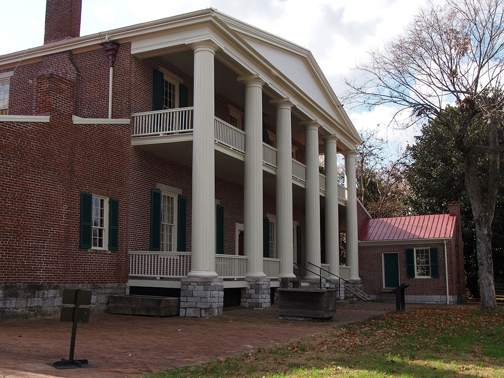

Historical museum and 1,000+ acre site was owned by Andrew Jackson, the seventh president of the United States
General Information
Grounds, museum, mansion tours, and exhibits available during operating hours.
Mansion tours, VIP tours, and specialty experiences are available for an additional fee.
See website for current ticket prices and tour options.
How to Get There
From Nashville (12 mi): Take I-40 E from downtown Nashville, exit onto Old Hickory Boulevard at Exit 221, travel north, and follow signs to Andrew Jackson’s Hermitage at 4580 Rachel's Ln in Hermitage.
Overview
The Hermitage is a historical museum located 10 miles (16 km) east of downtown Nashville. The 1,000+ acre site was owned by Andrew Jackson, the seventh president of the United States, from 1804 until his death at the Hermitage in 1845. It also serves as his final resting place. Jackson only lived at the property occasionally until he retired from public life in 1837. It is a National Historic Landmark.
The Hermitage is built in a secluded meadow that was chosen as a house site by Rachel Jackson, wife of Andrew Jackson. From 1804 to 1821, Jackson and his wife lived in a log cabin. Together, the complex formed the First Hermitage, with the structures known as the West, East, and Southeast cabins.
Jackson commissioned construction of a more refined house, and the original mansion was a two-story, Federal-style building built with bricks manufactured onsite by skilled people. Construction took place between 1819 and 1821. The house had four rooms on the ground floor and four rooms on the second level, each with a fireplace and chimney. The large central hallways opened in warm weather from front to back to form a breezeway. A simple portico was added later. In 1831, while Jackson was residing in the White House, he had the mansion remodeled under the direction of architect David Morrison. The new structure included flanking one-story wings, a one-story entrance portico with 10 columns, and a small rear portico that gave the house a Classical appearance.
In 1834, a chimney fire seriously damaged the house, with the exception of the dining room wing. This led to Jackson having the current 13-room, Greek Revival structure built on the same foundation as the former house. It was completed two years later. The architects for the house were Joseph Reiff and William C. Hume, who also built Tulip Grove across the road.
The mansion has a rectangular layout, about 104 feet (32 m) from east to west and 54 feet (16 m) from north to south. The south front is the location of the main entrance and includes a central block with a five-bay, two-story structure with a portico supported by six modified Corinthian style, wooden columns with a simple entablature resting on the capitals. Within the portico is a second-story balcony with simple square balusters. One-story wings with single fenestrations flank the mansion and extend beyond it to the front of the portico, enclosing it on three sides. While the southern façade gives the appearance of a flat roof, the three other elevations show that the tin-covered roof is pitched. The front façade was painted a light tan, and a sand coating was added to the columns and trim to simulate the appearance of stone. A near replica of the front portico is found on the north end of the house, although it features Doric-style columns and is capped with a pediment.
Opening night was attended by sitting U.S. President Richard Nixon, who played a few songs on the piano. To carry on the tradition of the show's run at the Ryman, a six-foot circle of oak was cut from the corner of the Ryman's stage and inlaid into center stage at the new venue. Artists on stage usually stood on the circle as they performed, and most modern performers still follow this tradition.
The layout of the main block of the house consists of four large rooms separated by a center hall. The entry hall with plank flooring painted dark is decorated with block-printed wallpaper by Joseph Dufour et Cie of Paris, depicting scenes from Telemachus' visit to the island of Calypso. At the far end of the hall is the elliptical cantilevered staircase with mahogany handrail that leads to the second level. To the left of the hall are the front and back parlors, featuring crystal chandeliers and Italian marble mantels. Leading from the front parlor is the dining room in the east wing.
Decorated with a high-gloss paint to reflect as much light as possible, the fireplace features a rustic mantelpiece called the "Eighth of January". It was carved by a veteran of the Battle of New Orleans, who worked on the mantelpiece on each anniversary of the battle until he finished on January 8, 1839. Jackson installed the piece on the next anniversary a year later on January 8, 1840. Adjacent to the dining room is a pantry and storage room that leads to an open passageway to the kitchen. This was built separate from the house to reduce the risk of fire to the main house as well as eliminate the noise, heat, and odors of cooking. To the right of the entrance hall, accessible via a side hall, are two bedrooms that were occupied by President Jackson and his son, Andrew Jackson, Jr. A spacious library and office used by Jackson and others to manage the site are located in the west wing.
On the second level are four bedrooms used by family members and guests, including Sam Houston, and Presidents James K. Polk and Martin Van Buren.
The site today covers 1,120 acres (450 ha), which includes the original 1,050-acre (420 ha) tract of Jackson's land. It is overseen and managed by The Andrew Jackson Foundation, formerly called the Ladies' Hermitage Association. The mansion is approached by a cedar-lined, 10-foot (3.0 m) wide, guitar-shaped carriage drive designed by Ralph E. W. Earl. The design made it easier to maneuver carriages in the narrow space. To the east of the house was a 1-acre (0.40 ha) formal garden designed by Philadelphia-based gardener William Frost in 1819. Laid out in the English four-square kitchen garden style, it consists of four quadrants and a circular center bed contained by unusually long, beveled bricks and pebbled pathways. Originally, the garden was primarily used to produce food for the mansion and secondarily as an ornamental pleasure garden. It is surrounded by a white picket fence. On the north perimeter stands a brick privy that served as a status symbol as well as a garden feature.
After Rachel Jackson died in 1828, Jackson had her buried in the garden she loved. When he had the house remodeled in 1831, Jackson also had a Classicizing "temple & monument" constructed for Rachel's grave. Craftsmen completed the domed limestone tomb with a copper roof in 1832.
Behind the mansion, the property includes a smokehouse that date to the early 19th century. The large brick smokehouse at the rear of the kitchen was built in 1831 and cured 20,000 pounds (9,100 kg) of pork a year. Nearby is a cabin known as Uncle Alfred's Cabin. Alfred Jackson was born a slave of Andrew Jackson at the Hermitage around 1812 and worked there in various jobs. After the Civil War, he stayed as a tenant farmer and later worked as caretaker and guide following the purchase of the estate in 1889 by the Ladies' Hermitage Association. Jackson died in 1901 and was buried near the tomb of the President and Mrs. Jackson.
Two other cabins were built from materials of the First Hermitage. After Jackson built the main house, the two-story log structure he had lived in for 15 years was disassembled, and the materials were used to build two one-story buildings used as workers quarters.
From 1988 to 2005, teams conducted extensive archaeological work on site. Their work revealed the location of an ice house behind the smokehouse and hundreds of thousands of artifacts. A brick triplex of cabins that was likely used by workers and artisans was discovered near the mansion yard. Archaeologists have identified thirteen dwellings used by workers. Remains of three dug-in-ground pits suggest there were at least two log houses and four brick duplexes. The cotton gin and press were located in one of the cotton fields just beyond the First Hermitage.
The mansion is the most accurately preserved early presidential home in the country. Each year, the home receives more than a quarter million visitors, making it the fourth-most-visited presidential residence in the country (after the White House, Mount Vernon, and Monticello). The property was declared a National Historic Landmark in 1960.
This article uses material from the Wikipedia article "The Hermitage (Nashville, Tennessee)" which is released under the Creative Commons Attribution-Share-Alike License 3.0


